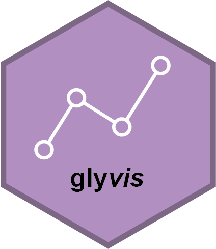
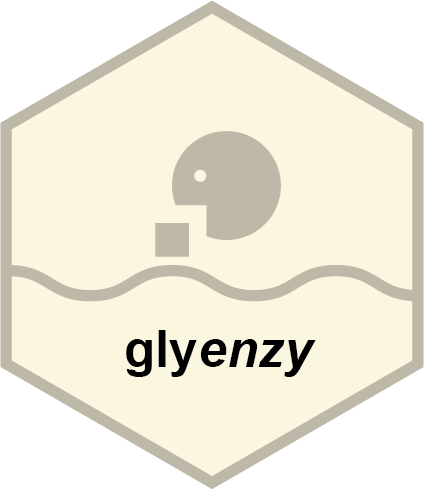

Overview
glycoverse is a comprehensive R ecosystem designed for glycomics and glycoproteomics data analysis. It provides a unified pipeline that covers the entire analytical workflow, from data import and cleaning to statistical analysis and visualization. It also provides a dedicated infrastructure for glycan structure analysis.
Quick Start
library(glycoverse)
# Import results from Byonic and GlycoQuant
exp <- read_byonic_pglycoquant("result.csv", sample_info = "sample_info.csv")
# Preprocess
clean_exp <- auto_clean(exp)
# Derived trait analysis
trait_exp <- derive_traits(clean_exp)
# Statistical analysis
dea_res <- gly_anova(trait_exp)
# Use pipeline for a more concise workflow
dea_res <- exp |>
auto_clean() |>
derive_traits() |>
gly_anova()Packages
🔬 Omics Data Analysis
Ecosystem units focusing on experimental data structures, automated cleaning, robust statistical calculation and interactive downstream plotting.
 glyexpData management & experiment objects |
glyreadMass spectrometry result importer |
 glycleanRule-based preprocessing |
 glystatsStatistical analysis |
 glyvisData visualization |
🧬 Glycan Structure Analysis
Packages for representing, parsing, matching, deriving and drawing glycan structures and traits.
 glyreprGlycan structure representation |
 glyparseIUPAC, WURCS, GlycoCT parser |
 glymotifMotif matching and analysis |
 glydetDerived trait calculation |
 glydrawGlycan structure visualization |
🧰 Optional Workflow Extensions
Additional packages for reference data, annotation, pathway context, enrichment and full pipeline assembly.
glydbCurated glycan database |
 glyannoComposition and structure annotation |
 glyenzyBiosynthesis pathway analysis |
glyfunFunctional enrichment analysis |
 glysmithFull analytical pipeline |
glycoverse Meta-Package
This repository contains the glycoverse meta-package, which provides convenient tools for managing the entire glycoverse ecosystem:
- One-command installation: Install all core packages at once
- Package updates: Update all glycoverse packages with a single function
- Situation report: Check the status of all installed glycoverse packages
Installation
Install from r-universe (Recommended)
# install.packages("pak")
pak::repo_add(glycoverse = "https://glycoverse.r-universe.dev")
pak::pkg_install("glycoverse")This installs the meta-package and all core packages: glyexp, glyread, glyclean, glystats, glyvis, glyrepr, glyparse, glymotif, glydet, and glydraw.
Troubleshooting: “Failed to download” or “403” errors usually indicate network issues with r-universe rate limiting. Try switching network environments or installing from GitHub.
Install Individual Packages
pak::repo_add(glycoverse = "https://glycoverse.r-universe.dev")
pak::pkg_install("glymotif") # Also installs dependencies: glyrepr, glyparse, glyexpInstall from GitHub
Click to expand detailed GitHub installation instructions
Prerequisite: To install packages from GitHub, you’ll need the proper compilation tools installed on your system. This means RTools for Windows and Xcode Command Line Tools for macOS. Without them, you’ll likely see a “Could not find tools necessary to compile a package” error. If you’re unsure about the process, a quick search for “install R package from GitHub” will provide helpful context on why these tools are necessary.
Installing from GitHub is a little tricky. Package dependencies within glycoverse are resolved assuming all packages are on r-universe (some on CRAN or Bioconductor). It means that when running the following code:
# Do NOT run:
pak::pkg_install("glycoverse/glyxxx@*release") # common practice to install a GitHub packageInstalling glyxxx from GitHub in this way does not bypass R-universe entirely, as its dependencies are still hosted there. If you are experiencing network issues with R-universe, switching to the GitHub version of glyxxx will not resolve the problem.
To truely install a glycoverse package from GitHub (along with all its dependencies), you have to install them one by one following the dependency tree:
pak::pkg_install("glyrepr") # from CRAN
pak::pkg_install("glyparse") # from CRAN
pak::pkg_install("glycoverse/glyexp@*release")
pak::pkg_install("glycoverse/glydraw@*release")
pak::pkg_install("glycoverse/glyread@*release")
pak::pkg_install("glycoverse/glyclean@*release")
pak::pkg_install("glycoverse/glystats@*release")
pak::pkg_install("glycoverse/glymotif@*release")
pak::pkg_install("glycoverse/glyvis@*release")
pak::pkg_install("glycoverse/glydet@*release")
# The meta-package
pak::pkg_install("glycoverse/glycoverse@*release")Note: Check the DESCRIPTION file of each package to find its dependencies.
Troubleshooting: Encountering an “HTTP error 403”? This usually means your IP has been rate-limited by GitHub. To resolve this, you need to configure a Personal Access Token (PAT).
- Sign up for a GitHub account.
- Install Git on your local machine.
- Generate a PAT via your GitHub settings.
- Configure the PAT locally (e.g., using the
gitcredsR package).
For a step-by-step guide, search for “How to set up GitHub PAT for R.”
Install optional packages
glydb, glyanno, glyenzy, glyfun, and glysmith are installed separately:
pak::pkg_install("glydb")
pak::pkg_install("glyanno")
pak::pkg_install("glyfun")Getting Started
Using the meta-package
Load all core packages:
library(glycoverse)
#> ── Attaching core glycoverse packages ───────────────── glycoverse 0.3.1.9000 ──
#> ✔ glyclean 0.14.1 ✔ glyparse 0.6.0
#> ✔ glydet 0.11.0 ✔ glyread 0.11.0
#> ✔ glydraw 0.4.0 ✔ glyrepr 0.12.0
#> ✔ glyexp 0.14.1 ✔ glystats 0.10.0.9000
#> ✔ glymotif 0.14.1 ✔ glyvis 0.6.0
#> ── Conflicts ───────────────────────────────────────── glycoverse_conflicts() ──
#> ✖ glyclean::aggregate() masks stats::aggregate()
#> ℹ Use the conflicted package (<http://conflicted.r-lib.org/>) to force all conflicts to become errorsCheck your installation:
Learning Path
For out-of-box analysis: Start with glyexp → glyread → glysmith
For systematic learning:
- Read the case studies:
- Follow the recommended learning order:
You might also find glydb, glyanno, glyenzy, and glyfun useful for specific tasks.
Updating Packages
# Update all glycoverse packages
glycoverse_update()
# List all dependencies
glycoverse_deps(recursive = TRUE)Important Notes
- glycoverse v0.2.5+ uses r-universe for releases. Update the meta-package for better package management.
- Updating the meta-package itself does not automatically update other glycoverse packages. Use
glycoverse_update()for that.